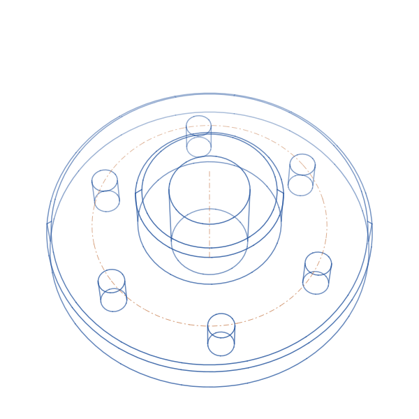
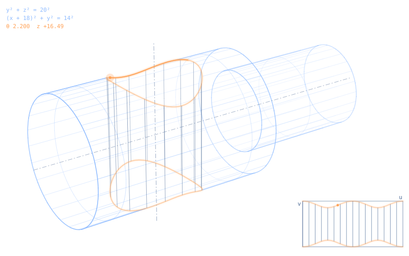
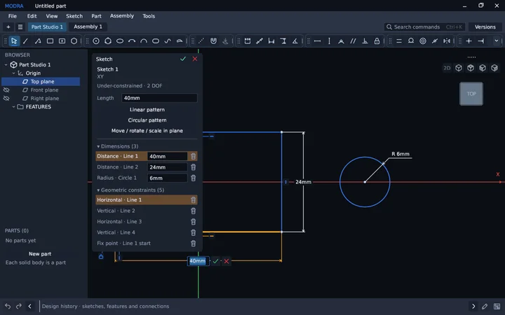
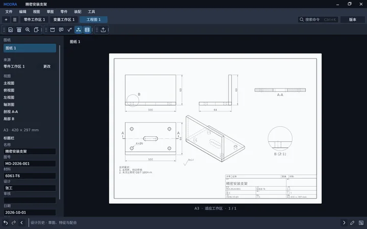
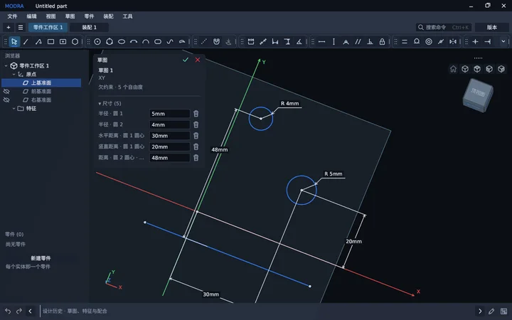

Modra
Parametric CAD, written in Rust from the geometry kernel up.
In development Exact B-rep kernel · milestone M1 · Linux

Parametric
Change a value. The model follows.
An illustration drawn by this page: the sketch and the 3D part above share these two parameters.
Capabilities
In the desktop app today
Parametric history
Edit a dimension; everything downstream rebuilds.
Sketch and constrain
Dimensions and constraints, typed on the canvas.
Part features
Extrude, revolve, holes, patterns, fillets, shell.
Assemblies
Mates, motion, exploded views and a bill of materials.
Drawings
Projected, section and detail views, out to PDF and SVG.
Materials
A 104-entry library, kept as plain JSON.
Versions
Named versions, branches and three-way merge.
Interchange
STEP AP242, DXF, STL, glTF and GLB.
CLI and MCP
The same engine, from scripts and AI agents.
Kernel
An exact B‑rep kernel, written in-house
Every face an exact surface, every edge an exact curve. Pure Rust, in development toward milestone M1.

- 10−6 mmmodeling tolerance: one nanometre
- ±500 mmodel space on each axis
- 99.6 %of 512 test STEP files imported, with 0 crashes
- 0wrong answers in 250,120 inside/outside tests on 561 real STEP files
Path to milestone M1
- Exact coreIn place
- BooleansHoles, split
- Cross holesQuadric intersections
- Mirror, patternsFeature and path patterns
- Fillets, chamfersConstant radius
- ShellExact offsets
- M1Machined-part setIn development
in place planned, in this order
M1 surfaces
- Plane
- Cylinder
- Cone
- Sphere
- Torus
M1 operations
- Extrude
- Revolve
- Booleans
- Holes
- Split
- Mirror
- Patterns
- Fillets
- Chamfers
- Shell
- Exact STEP export
Gallery
From the GUI test suite

Sketch with dimensions and constraints 
Drawing with section and detail views (Chinese UI) 
A sketch viewed in 3D (Chinese UI)